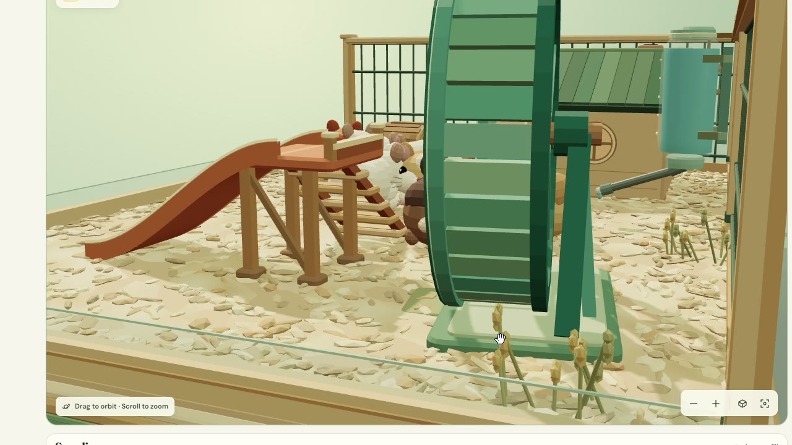

Колония хомяков BurrowdaysBurrowdays hamster colony
3D-клетка, которая живёт сама: хомяки едят, пьют, бегают в колесе, съезжают с горки на животе, рождаются, стареют и уходят. Список жителей, журнал, кнопки корма и воды, камера за хомяком, пауза и скорость до ×4.A 3D habitat that runs itself: hamsters eat, drink, run in the wheel, slide down on their bellies, are born, grow old and pass away. A resident list, a journal, food and water refills, a follow camera, pause and up to ×4 speed.

По 3D вопросов нет. Минус полбалла за толкучку: хомяки великоваты и проходят сквозь друг друга.The 3D is great. Half a point off for the crowding: the hamsters are a bit too big and walk through each other.
Что попробоватьWhat to try
- 01Кликнуть по хомяку: куда он идёт, возраст, поколение и камера за ним.Click a hamster: where it is heading, age, generation and a follow camera.
- 02Посмотреть, как хомяк сам заходит в колесо и как съезжает с горки на животе.Watch a hamster step onto the wheel and slide down the slope on its belly.
- 03Досыпать корм и долить воду кнопками, у поилки падает капелька.Refill food and water with the buttons; a droplet falls at the water bottle.
- 04Поставить ×4 и читать журнал: кто родился, кто ушёл.Set ×4 and read the journal: who was born, who passed away.
ПроверкаChecks
За 5 минут на ×4 колония дошла до конца 36-го дня: 42 рождения, 37 смертей, 15-е поколение. Хомяков всегда было от 5 до 12, корм и вода кончались и пополнялись, в колесе максимум один хомяк.In 5 minutes at ×4 the colony reached the end of day 36: 42 births, 37 deaths, a 15th generation. There were always 5 to 12 hamsters, food and water ran out and were refilled, at most one hamster in the wheel.
Для первого запуска нужен интернет: Three.js грузится с CDN.The first run needs internet: Three.js loads from a CDN.
Промпт моделиThe prompt
Русский перевод. Модель получила промпт на английском.
Сделай в браузере 3D-клетку с хомяками, которые живут своей жизнью. Low-poly, Three.js.
В клетке колесо, миска, поилка, домик, горка и подстилка. Хомяки сами решают, что делать: едят, пьют, бегают в колесе (по одному), спят, общаются. Рождаются, растут, стареют и умирают - колония живёт поколениями без меня, не вымирает и не переполняется. Еда и вода заканчиваются, и это видно. Есть день и ночь.
Клик по хомяку - его имя, возраст, потребности и камера за ним. Пауза, скорость ×0,5-×4, статистика рождений и смертей.
Представь, что это симулятор для Steam, который игроки оставляют включённым на всю ночь. Удиви меня.
Итог - один index.html, Three.js с CDN, без внешних моделей и текстур.
Не задавай вопросов: собери, оставь колонию на ×4 на несколько минут и почини всё, что ломается.Build a 3D hamster cage in the browser where the hamsters live their own lives. Low-poly, Three.js.
The cage has a wheel, a bowl, a water bottle, a house, a slide and bedding. The hamsters decide for themselves what to do: eat, drink, run on the wheel (one at a time), sleep, socialize. They are born, grow, age and die - the colony lives on for generations without me, never dies out and never overflows. Food and water run out, and you can see it. There is day and night.
Click a hamster - its name, age, needs, and the camera follows it. Pause, speed x0.5-x4, birth and death stats.
Imagine this is a Steam simulator that players leave running all night. Surprise me.
The result is a single index.html, Three.js from a CDN, no external models or textures.
Don't ask questions: build it, leave the colony on x4 for a few minutes and fix everything that breaks.Скачать промпт (RU)Prompt in Russian · Скачать оригинал (EN)Original prompt (EN) · Исходники на GitHubSource on GitHub
Новые тесты нейросетей, ссылки на игры и опросы - в Telegram-канале.New AI model tests, game links and polls in my Telegram channel.